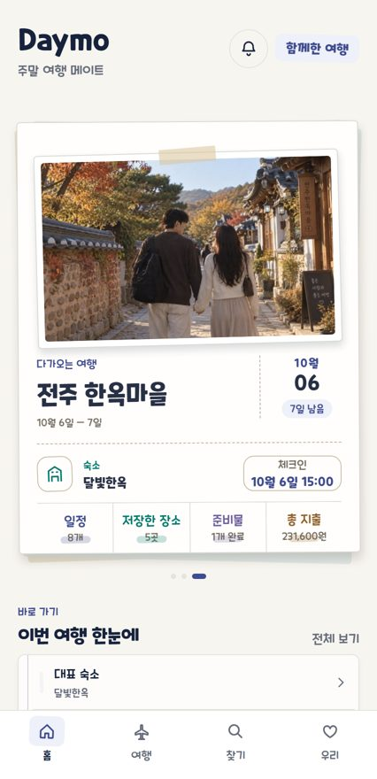

발달장애인 AI 모의면접
현장실습 · 2026.10 ~
발달장애 성인이 혼자서도 반복해 연습할 수 있는 웹 모의면접입니다. 대상과 현장을 먼저 조사하고, 쉬운 말로 묻고 기다려 주는 면접을 설계했습니다.
- 이력서를 바탕으로 질문을 만들고, 말로 답하면 음성 인식으로 받아 결과 리포트로 돌려줌
- 실제 사람처럼 말하는 가상 면접관 영상과 목소리
- 공공기관에서 시연
컴퓨터공학 전공 마지막 학기로, 지금은 현장실습에서 새 서비스 기획·개발과 사내 자동화 도구를 만들고 있습니다.
Spring으로 백엔드를 시작했고, 지금은 현장에서 사람이 반복하던 일을 찾아 AI와 자동화로 줄이는 일을 합니다. 만든 것은 직접 배포하고 운영하는 데까지 갑니다.
AX — 현장 업무에 AI·자동화 붙이기
현장실습 · 2026.10 ~
발달장애 성인이 혼자서도 반복해 연습할 수 있는 웹 모의면접입니다. 대상과 현장을 먼저 조사하고, 쉬운 말로 묻고 기다려 주는 면접을 설계했습니다.
현장실습 · 2026.09 ~
개인 · 공개
백엔드
프로그래머스 단기심화 4기 · MSA 중고거래 플랫폼 · 쿠폰 서비스 담당 · 2026.01 ~ 2026.02
다음 단계로 고민한 것 — 블룸 필터 설계 · 측정 전
공식 문서·소스코드로 Redis 학습 체계를 직접 짜서 2주간 파고들었습니다.
개인 · 2026.08 ~ 운영 중
연인·친구와 함께 여행을 계획하고 기록하는 앱을 혼자 기획·개발해 App Store에 냈습니다.

미래내일 일경험 · 관리자 중심 쇼핑몰 플랫폼
IoT — NHN Academy AIoT 2기
팀 프로젝트 · 2025.04 ~ 2025.06
센서 데이터를 MQTT·Modbus로 모아 실시간으로 보여 주고, 기준을 넘으면 알리는 시스템을 Spring Cloud 기반 MSA로 만들었습니다.
팀 프로젝트(4명) · 2024.12
학원 안 센서 데이터를 받아 노드를 이어 붙이는 방식(FBP)으로 가공해 저장하고 시각화했습니다.
설계가 자주 바뀌는 걸 겪으며, 모듈을 데이터 흐름으로 느슨하게 잇는 구조가 유지보수에 왜 좋은지 체감했습니다.